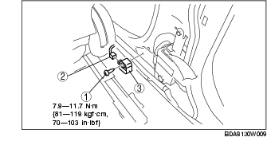

Side air bag sensor removal/installation
- • Handling the side air bag sensor improperly can accidentally operate (deploy) the side air bag module, which may seriously injure you. Read the service warnings and cautions before handling the side air bag sensor. (See SERVICE WARNINGS.) (See SERVICE CAUTIONS.)
1. Turn the ignition switch to the LOCK position.
2. Disconnect the negative battery cable and wait for 1 min or more.
3. Remove the B-pillar lower trim. (See B-PILLAR LOWER TRIM REMOVAL/INSTALLATION.)
4. Remove in the order indicated in the table.

5. Install in the reverse order of removal.
6. Turn the ignition switch to the ON position and hold for 5 s or more.
- • When turning the ignition switch to the ON position after replacing the side air bag sensor, performing the following operations will cancel the sensor code over-write, which could cause the air bags to fail to operate (deploy).
- - The ignition switch is turned to the LOCK position before the ignition switch is held in the ON position for 5 s or more.
- - The engine is started.
- • If the above operations are performed and the sensor code over-write is canceled, it will be necessary to replace the sensor again.
7. Verify that the air bag system warning light illuminates for approx. 3 s and goes out.
- • If the air bag system warning light does not operate, refer to the on-board diagnostic system (air bag system) and perform inspection of the system.